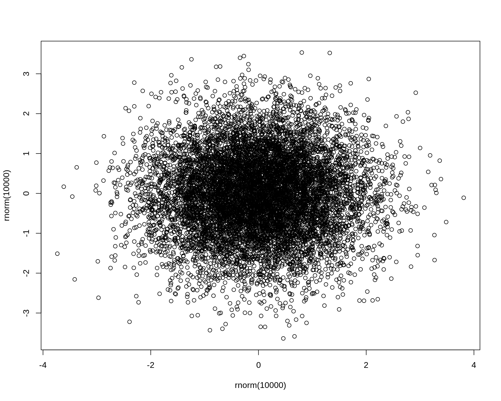
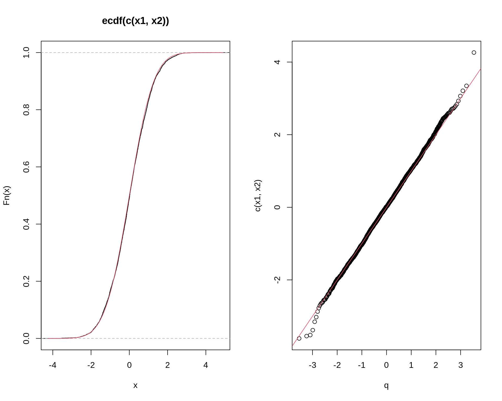

Geração de números não uniformes
Método da transformação de variáveis
Walmes M. Zeviani e Fernando P. Mayer
1 Introdução
A ideia do método da transformação de variáveis é gerar valores aleatórios de uma distribuição qualquer, com base na relação com alguma outra distribuição conhecida. Portanto, primeiro gera-se valores de uma distribuição da qual se conhece e que possua um bom gerador disponível. Depois disso, basta aplicar a transformação para se chegar nos valores da distribuição desejada.
Um exemplo típico é, por exemplo, quando queremos gerar valores de uma distribuição \(\text{logN}(\mu, \sigma^2)\) a partir de valores gerados de uma \(\text{N}(\mu, \sigma^2)\). Nesse caso, se \(Y \sim \text{N}(\mu, \sigma^2)\), então usando a transformação \(X = e^{Y}\), \(X\) terá distribuição \(\text{logN}(\mu, \sigma^2)\), pois \(\log X = Y\).
Para um diagrama completo (ou quase) da relação entre distribuições univariadas, veja Univariate Distribution Relationships de Lawrence Leemis.
2 Exemplos de transformações
Alguns exemplos são:
- Se \(Z \sim \text{N}(0,1)\), então \(V=Z^2 \sim \chi^2(1)\)
- Se \(U \sim \chi^2(m)\) e \(V \sim \chi^2(n)\) são independentes, então \(F = \frac{U/m}{V/n}\) terá a distribuição \(F\) com \((m,n)\) graus de liberdade.
- Se \(Z \sim \text{N}(0,1)\) e \(V \sim \chi^2(n)\) são independentes, então \(T = \frac{Z}{\sqrt{V/n}}\) terá a distribuição \(t\) de Student com \(n\) graus de liberdade.
- Se \(U_1, \ldots, U_{12} \sim \text{U}(-1/2,1/2)\), então \(Z = \sum_{i=1}^{12} U_i\) terá distribuição \(\text{N}(0,1)\) (usando o Teorema do Limite Central).
- Se \(U, V \sim \text{U}(0,1)\) são independentes, então \[ Z_1 = \sqrt{-2 \log U} \cos (2\pi V) \qquad Z_2 = \sqrt{-2 \log U} \sin (2\pi V) \] serão duas VAs independentes com distribuição normal padrão.
- Se \(U \sim \text{Gama}(r,\lambda)\) e \(V \sim \text{Gama}(s,\lambda)\) são independentes, então \(X = \frac{U}{U+V}\) terá a distribuição \(\text{Beta}(r, s)\).
- Se \(U, V \sim \text{U}(0,1)\) são independentes, então \[ X = \left\lfloor 1 + \frac{\log (V)}{\log (1 - (1 - \theta)^U)} \right\rfloor \] terá a distribuição \(\text{Logaritmica}(\theta)\), onde \(\lfloor x \rfloor\) denota a parte inteira (arredondada para baixo) de \(x\).
- \(U \sim \text{U}(0,1)\), então \(X = -\lambda \log U\) terá distribuição \(\text{Exp}(\lambda)\).
Somas e misturas de distribuições são considerados tipos especiais de transformações.
Veremos algumas implementações abaixo.
2.1 Exemplo (distribuição Beta)
Se \(U \sim \text{Gama}(r,\lambda)\) e \(V \sim \text{Gama}(s,\lambda)\) são independentes, então \[ X = \frac{U}{U+V} \] terá a distribuição \(\text{Beta}(r, s)\).
- Gere um valor aleatório \(u\) de \(\text{Gama}(r, 1)\)
- Gere um valor aleatório \(v\) de \(\text{Gama}(s, 1)\)
- Calcule \(x = \dfrac{u}{u+v}\)
Para gerar valores de uma \(\text{Beta}(3,2)\) fazemos então:
n <- 1000
r <- 3
s <- 2
u <- rgamma(n, shape = r, rate = 1)
v <- rgamma(n, shape = s, rate = 1)
x <- u/(u + v)
## Comparação
par(mfrow = c(1, 2))
plot(ecdf(x))
curve(pbeta(x, r, s), add = TRUE, col = 2)
q <- qbeta(ppoints(n), r, s)
qqplot(q, x)
abline(0, 1, col = 2)
par(mfrow = c(1, 1))
2.2 Exemplo (distribuição Logarítmica)
(Este é um exemplo de uma distribuição onde não existe uma função pronta no R para gerar valores).
Dizemos que \(X\) segue a distribuição (discreta) Logarítmica se \[ f(x) = P[X=x] = \frac{a \theta^x}{x}, \quad x=1, 2, \ldots \] onde \(0 < \theta < 1\) e \(a = (-\log (1-\theta))^{-1}\).
Se \(U, V \sim \text{U}(0,1)\) são independentes, então \[ X = \left\lfloor 1 + \frac{\log (V)}{\log (1 - (1 - \theta)^U)} \right\rfloor \] terá a distribuição \(\text{Logaritmica}(\theta)\).
- Gere um valor aleatório \(u\) de \(\text{U}(0, 1)\)
- Gere um valor aleatório \(v\) de \(\text{U}(0, 1)\)
- Calcule \(x = \left\lfloor 1 + \frac{\log (v)}{\log (1 - (1 - \theta)^u)} \right\rfloor\)
Para gerar valores de uma \(\text{Logaritmica}(0.5)\) fazemos então
n <- 1000
theta <- 0.5
u <- runif(n)
v <- runif(n)
x <- floor(1 + log(v) / log(1 - (1 - theta)^u))
## Calcula as probabilidades teóricas (exatas) usando a definição da
## distribuição
k <- 1:max(x)
p <- -1/log(1 - theta) * theta^k/k
## Compara a proporção de valores gerados com a prob. teórica
cbind("Gerado" = prop.table(table(x)), "Teórico" = p)# Gerado Teórico
# 1 0.738 0.721347520
# 2 0.155 0.180336880
# 3 0.062 0.060112293
# 4 0.023 0.022542110
# 5 0.012 0.009016844
# 6 0.008 0.003757018
# 7 0.002 0.001610151## Comparação gráfica
par(mfrow = c(1, 2))
plot(prop.table(table(x)), xlab = "X", ylab = "P[X]")
points(p ~ I(k + 0.1), type = "h", col = 2, lwd = 2)
legend("topright", legend = c("Empírico", "Teórico"),
lty = 1, col = c(1, 2))
plot(ecdf(x))
lines(cumsum(p), type = "s", col = 2)
par(mfrow = c(1, 1))
3 Somas e misturas
Somas e misturas de VAs são tipos especiais de transformações. Chamamos de convolução a soma de VAs independentes. As misturas são VAs formadas pela mistura de outras VAs (discretas ou contínuas).
3.1 Convoluções
Seja \(X_1, \ldots, X_n\) VAs independentes e identicamente distribuídas, com distribuição comum \(X_j \sim X\), e considere \(S = X_1 + \cdots + X_n\). A função de distribuição da soma \(S\) é chamada de convolução de ordem \(n\) de \(X\), e denotada por \(F_X^{*(n)}\).
Portanto, podemos gerar uma convolução diretamente através da geração de \(X_1, \ldots, X_n\) e calculando a soma.
Algumas convoluções importantes:
- Se \(Z_1, \ldots, Z_n \sim \text{N}(0,1)\), então \(V = \sum_{i=1}^{n} Z_i^2 \sim \chi^2(n)\)
- Se \(U_1, \ldots, U_{12} \sim \text{U}(-1/2,1/2)\), então \(Z = \sum_{i=1}^{12} U_i\) terá distribuição \(\text{N}(0,1)\) (usando o Teorema do Limite Central).
- A distribuição binomial negativa \(\text{BinNeg}(r,p)\) pode ser definida como:
- A convolução de \(r\) VAs iid \(\text{Geom}(p)\) (convolução)
- Se \(X|\lambda \sim \text{Poisson}(\lambda)\) e \(\lambda \sim \text{Gama}(r, \beta)\), então \(X\) terá distribuição binomial negativa com parâmetros \(r\) e \(p = \beta/(1+\beta)\) (mistura)
- A convolução de \(r\) VAs independentes \(\text{Exp}(\lambda)\) tem distribuição \(\text{Gama}(r, \lambda)\).
- A soma de \(n\) VAs iid \(\text{Ber}(p)\) tem distribuição \(\text{Bin}(n,p)\).
3.1.1 Exemplo (distribuição qui-quadrado)
Se \(Z_1, \ldots, Z_n \sim \text{N}(0,1)\), então \(V = \sum_{i=1}^{n} Z_i^2 \sim \chi^2(n)\).
Para gerar \(m\) valores de uma \(\chi^2(n)\):
- Crie uma matriz \(m \times n\) com \(mn\) VAs \(\text{N(0,1)}\)
- Calcule o quadrado de cada número da matriz em (1)
- Calcule a soma das linhas da matriz. Cada soma de linha é uma realização da distribuição \(\chi^2(n)\)
- Retorne o vetor com as somas
Para gerar \(m=1000\) valores da \(\chi^2(2)\):
m <- 1000
n <- 2
X <- matrix(rnorm(n * m), nrow = m, ncol = n)^2
x <- rowSums(X)
## Comparação
par(mfrow = c(1, 2))
plot(ecdf(x))
curve(pchisq(x, n), add = TRUE, col = 2)
q <- qchisq(ppoints(m), 2)
qqplot(q, x)
abline(0, 1, col = 2)
par(mfrow = c(1, 1))
3.1.2 Exemplo (distribuição binomial)
Se \(X_1, \ldots, X_n \sim \text{Ber}(p)\), então \(Y = \sum_{i=1}^{n} X_1 + \cdots + X_n\) terá distribuição \(\text{Bin}(n,p)\)
Para gerar \(m\) valores de uma \(\text{Bin}(n, p)\) (usando a geração de Bernoulli pela uniforme):
- Crie uma matriz \(m \times n\) com \(mn\) VAs \(\text{U}(0,1)\)
- Se \(u > p\) faça 1, caso contrário 0. Até aqui é o mesmo que gerar \(n\) valores aleatórios de uma \(\text{Ber}(p)\) em cada linha da matriz
- Calcule a soma das linhas da matriz. Cada soma de linha é uma realização da distribuição \(\text{Bin}(n, p)\)
- Retorne o vetor com as somas
Para gerar \(m = 1000\) valores de \(\text{Bin}(6, 0.5)\):
m <- 1000
size <- 6
prob <- 0.5
X <- matrix(runif(m * size) > prob, nrow = m, ncol = size)
x <- rowSums(X)
## Calcula as probabilidades teóricas (exatas) usando a definição da
## distribuição
k <- 0:max(x)
p <- dbinom(k, size = size, prob = prob)
## Compara a proporção de valores gerados com a prob. teórica
round(cbind("Gerado" = prop.table(table(x)), "Teórico" = p), 3)# Gerado Teórico
# 0 0.009 0.016
# 1 0.100 0.094
# 2 0.211 0.234
# 3 0.330 0.312
# 4 0.243 0.234
# 5 0.096 0.094
# 6 0.011 0.016## Comparação gráfica
par(mfrow = c(1, 2))
plot(prop.table(table(x)), xlab = "X", ylab = "P[X]")
points(p ~ I(k + 0.1), type = "h", col = 2, lwd = 2)
legend("topright", legend = c("Empírico", "Teórico"),
lty = 1, col = c(1, 2))
plot(ecdf(x))
lines(cumsum(p), type = "S", col = 2)
par(mfrow = c(1, 1))
4 Distribuição normal
Existem vários métodos para se gerar valores aleatórios de uma distribuição normal.
Geralmente, estes métodos são desenvolvidos para gerar valores de uma distribuição normal padrão \(\text{N}(0,1)\). No entanto, sabemos que a transformação \[ Z = \frac{X - \mu}{\sigma} \sim \text{N}(0,1) \] Portanto, podemos obter \[ X = Z\sigma + \mu \] que terá distribuição \(\text{N}(\mu, \sigma^2)\), a partir de valores gerados de \(Z\).
4.1 Por convolução
Se \(U_1, \ldots, U_{12} \sim \text{U}(-1/2,1/2)\), então \(Z = \sum_{i=1}^{12} U_i\) terá distribuição \(\text{N}(0,1)\).
Note que, neste caso, \(\text{E}[Z] = 0\) e \(\text{Var}[Z] = 1\). Pelo Teorema do Limite Central (TLC), e sabendo do fato que a Uniforme é simétrica, então \(Z \sim \text{N}(0,1)\).
Para gerar \(m\) valores de uma \(\text{N}(0, 1)\):
- Crie uma matriz \(m \times n=12\) com \(mn\) VAs \(\text{U}(-0.5,0.5)\)
- Calcule a soma das linhas da matriz
- Retorne o vetor com as somas
Para gerar \(m = 1000\) valores de \(\text{N}(0, 1)\):
m <- 1000
n <- 12
X <- matrix(runif(m * n, -0.5, 0.5), nrow = m, ncol = n)
x <- rowSums(X)
## Comparação
par(mfrow = c(1, 2))
plot(ecdf(x))
curve(pnorm(x), add = TRUE, col = 2)
q <- qnorm(ppoints(m))
qqplot(q, x)
abline(0, 1, col = 2)
par(mfrow = c(1, 1))
Note que as caudas da distribuição empírica começa a se afastar um pouco da teórica. De fato, esse é um problema desse método simples por convolução.
Os métodos a seguir são mais recomendados (e utilizados) para gerar valores da normal.
4.2 Método de Box-Muller
A ideia geral do métopdo desenvolvido por Box e Muller é transformar a relação entre duas normais padrão, de coordenadas cartesianas para coordenadas polares, ou seja,
plot(rnorm(10000), rnorm(10000)) Usando as coordenadas polares, soteiam-se valores do raio (\(r\)) e do ângulo \(\theta\) (usando associações com a \(\text{U}(0,1)\)), que darão as coordenadas \((r, \theta)\) em coordenadas polares. Depois, converte-se novamente para o plano cartesiano, obtendo assim um ponto na coordenada \((x, y)\), que representam um par de observações de duas VAs \(X, Y \sim \text{N}(0,1)\) independentes.
Assista ao vídeo A integral Gaussiana no perfil do Luiz Chamon para compreender a passagem de coordenadas cartesianas para coordenadas polares.
Para gerar números aleatórios da distribuição normal padrão, precisamos de valores para o raio \(r\) e o ângulo \(\theta\) (em coordenadas polares)de tal forma a poder convertê-los em valores \(x\) e \(y\) usando as expressões \[ \begin{cases} x = r \cos(\theta) \\ y = r \sin(\theta). \end{cases} \]
Dessa forma, o par \((x,y)\) será uma realização das variáveis aleatórias \((X,Y)\), que possuem, cada uma, distribuição \(\text{N}(0,1)\).
Valores para o ângulo podem ser obtidos pelo produto de uma \(\text{Uniforme}(0, 1)\) por \(2\pi\), ou seja \(\theta \sim 2\pi U(0, 1)\).
Para o raio, precisamos verificar qual a distribuição adequada. Note que a função de distribuição acumulada da variável \(R\) pode ser determinada a partir da integral \[ \begin{align*} \Pr(R \leq r) &= \int_{0}^{2\pi} \int_{0}^{r} (2\pi)^{-1} s\exp\{-s^2/2\}\, \text{d}s \text{d}\theta \\ &= (2\pi)^{-1} \int_{0}^{2\pi} \text{d}\theta \int_{0}^{r} s\exp\{-s^2/2\}\, \text{d}s \\ &= (2\pi)^{-1} (2\pi) \int_{0}^{r} s\exp\{-s^2/2\}\, \text{d}s\\ &= \int_{0}^{r} s\exp\{-s^2/2\}\, \text{d}s. \end{align*} \]
Para resolver a integral, considere \(u = s^2\) e com isso \(\text{d}s = \text{d}u/2s\). Os limites de integração são alterados: quando \(s = 0\) tem-se que \(u = s^2 = 0\); quando \(s = r\) tem-se que \(u = s^2 = r^2\). Dessa forma, a integral fica \[ \begin{align*} \Pr(R \leq r) &= \int_{0}^{r} s\exp\{-s^2/2\}\, \text{d}s\\ &= \int_{0}^{r^2} s\exp\{-u/2\}\, (2s)^{-1}\text{d}u\\ &= \frac{1}{2} \int_{0}^{r^2} \exp\{-u/2\}\, \text{d}u\\ &= \frac{1}{2} (-2) (\exp\{-u/2\}) \biggr\rvert_{0}^{r^2}\\ &= -(\exp\{-u/2\}) \biggr\rvert_{0}^{r^2}\\ &= -(\exp\{-r^2/2\} - \exp\{-0^2/2\})\\ &= 1 - \exp\{-r^2/2\}. \end{align*} \]
O resultado obtido foi a função de distribuição acumulada da variável aleatória \(R\), ou seja, \(F(r)\). Se formos capazes de inverter essa função, poderemos gerar números aleatórios de \(R\) usando números uniformes.
A inversa da função \(F(r) = 1 - \exp\{-r^2/2\}\) é \[ \begin{align*} u &= 1 - \exp\{-r^2/2\}\\ \log(1 - u) &= -r^2/2\\ r &= \pm \sqrt{-2 \log(1 - u)} \end{align*} \]
Como os valores de \(u\) são realizações de uma uniforme padrão, podemos simplificar esse resultado para \[ r = \sqrt{-2 \log(u)} \]
Assim, para gerar números da normal padrão, usamos \[ \begin{cases} x = \sqrt{-2 \log(u_1)}\, \cos(2\pi u_2)\\ y = \sqrt{-2 \log(u_1)}\, \sin(2\pi u_2), \end{cases} \] em que \(u_1\) e \(u_2\) são números da Uniforme padrão.
O algoritmo de Box-Muller é definido como:
- Gera valores \(u_1\) e \(u_2\) de \(\text{U}(0,1)\)
- Calcule \[ \begin{cases} x_1 = \sqrt{-2 \log(u_1)}\, \cos(2\pi u_2)\\ x_2 = \sqrt{-2 \log(u_1)}\, \sin(2\pi u_2), \end{cases} \]
- Retorne \(\{x_1, x_2\}\)
## Gerando valores da normal pelo algoritmo de Box-Muller
Nsim <- 2500
## Amostra das uniformes
u1 <- runif(Nsim)
u2 <- runif(Nsim)
## Raio
R <- sqrt(-2 * log(u1))
## Angulo
T <- 2 * pi * u2
x1 <- R * cos(T)
x2 <- R * sin(T)
plot(x1, x2, xlim = c(-4, 4), ylim = c(-4, 4))
## Confere
par(mfrow = c(1, 2))
plot(ecdf(c(x1, x2)))
curve(pnorm(x), add = TRUE, col = 2)
q <- qnorm(ppoints(Nsim))
qqplot(q, c(x1, x2))
abline(0, 1, col = 2)
par(mfrow = c(1, 1))Note que sempre serão geradas duas normais padrão, x1 e x2. Com isso, o resultado final será sempre o dobro do valor requerido. Assim, para gerar \(n\) valores (e não \(2n\)), temos duas opções:
- Usar apenas
x1oux2 - Rodar o algoritmo em \(n/2\) passos e concatenar
x1ex2
## Uma função mais eficiente
boxmuller <- function(n) {
## Executa o algoritmo em somente metade dos valores requeridos
m <- ceiling(n/2)
u1 <- runif(m)
u2 <- runif(m)
R <- sqrt(-2 * log(u1))
T <- 2 * pi * u2
x <- c(R * cos(T), R * sin(T))
## Se n for par, retorne tudo, caso contrário, tire um valor
if (n %% 2 == 0) x else x[-1]
}
boxmuller(2)# [1] 0.9234418 1.0826671boxmuller(3)# [1] 0.66055651 0.07799255 -1.80340422boxmuller(4)# [1] 0.6975372 -0.3609859 -0.1677477 -0.4755585boxmuller(5)# [1] 1.0071460 1.0662797 0.1684460 0.1523806 0.30986264.3 Método de coordenadas polares
O método de coordenadas polares (ou simplemente método polar) é uma variação do método de Box-Muller. A motivação do método foi a de evitar o uso de funções transcendentais como seno e cossseno.
- Gere valores \(u_1, u_2 \sim \text{U}(-1, 1)\)
- Calcule \(r^2 = u_1^2 + u_2^2\).
- Se esse ponto estiver dentro do raio unitário, ou seja, se \(r^2 \leq 1\), então calcule \(z = \sqrt{(-2 \log r^2)/r^2}\)
- Faça \(x_1 = u_1 z\) e \(x_2 = u_2 z\)
Note que apenas substituimos \(\cos(2\pi u_2) = u_1/\sqrt{r^2}\) e \(\sin(2\pi u_2) = u_2/\sqrt{r^2}\).
Veja que esse método nada mais é do que uma forma do algoritmo de aceitação-rejeição.
Nsim <- 2500
u1 <- runif(Nsim, -1, 1)
u2 <- runif(Nsim, -1, 1)
r2 <- u1^2 + u2^2
ac <- r2 <= 1
z <- sqrt((-2 * log(r2[ac]))/r2[ac])
x1 <- u1[ac] * z
x2 <- u2[ac] * z
## O código desta função está no final da página
plotcirc()
points(u1[ac], u2[ac], pch = 1, col = 3)
points(u1[!ac], u2[!ac], pch = 1, col = 2)Note que a taxa de aceitação será sempre a razão entre a área do círculo e a área do quadrado. A área do cículo é \(A_c = \pi r^2 = \pi\). A área do quadrado é \(A_q = l^2 = (2r)^2 = 4\). Portanto, a taxa de aceitação (teórica) será \[ \frac{A_c}{A_q} = \frac{\pi}{4} \approx 0.785 \]
A taxa de aceitação da simulação foi
sum(ac)/Nsim# [1] 0.7912Note que na relação \[ \frac{A_c}{A_q} = \frac{\pi}{4} \] podemos isolar \(\pi\) \[ \pi = \frac{4A_c}{A_q} \approx \frac{4 \text{ #circulo}}{\text{ #quadrado}} \] para obter uma estimativa do valor de \(\pi\)
(4 * sum(ac))/Nsim# [1] 3.1648Conferindo os valores gerados:
par(mfrow = c(1, 2))
plot(ecdf(c(x1, x2)))
curve(pnorm(x), add = TRUE, col = 2)
q <- qnorm(ppoints(Nsim))
qqplot(q, c(x1, x2))
abline(0, 1, col = 2)
par(mfrow = c(1, 1))
Podemos também defnir uma função gernérica para gerar \(n\) valores:
polarmethod <- function(n) {
m <- ceiling(n/2)
x1 <- numeric(m)
x2 <- numeric(m)
i <- 1
while (i <= m) {
u1 <- runif(1, -1, 1)
u2 <- runif(1, -1, 1)
R2 <- u1^2 + u2^2
if (R2 <= 1) {
z <- sqrt((-2 * log(R2))/R2)
x1[i] <- u1 * z
x2[i] <- u2 * z
i <- i + 1
}
}
x <- c(x1, x2)
if (n %% 2 == 0) x else x[-1]
}
polarmethod(2)# [1] 0.8877987 -0.9400620polarmethod(3)# [1] -0.5380968 -0.2598577 -0.9556475polarmethod(4)# [1] 0.1673346 0.9279059 1.1766460 1.7330495polarmethod(5)# [1] -1.0159191 -1.4593440 1.1055767 -0.9991863 -1.2083035Comparando os dois métodos vemos que, apesar do método polar não usar funções seno e cosseno, é necessário usar o while(), o que “encarece” o algoritmo computacionalemnte.
microbenchmark::microbenchmark(boxmuller(1000), polarmethod(1000))# Unit: microseconds
# expr min lq mean median uq max neval cld
# boxmuller(1000) 64.0 66.20 68.264 68.10 69.70 80.8 100 a
# polarmethod(1000) 2509.1 2618.05 2858.722 2661.55 2701.55 7219.4 100 b4.4 A função rnorm()
No R, sabemos que a função rnorm() serve para gerar valores aleatórios da distribuição normal. Esta função usa um algoritmo chamadpo de “inversão”, cujos detalhes estão descritos em help(qnorm).
No entanto, assim como no caso da Uniforme, também estão implementados outros algoritmos para gerar valores da Normal, incluindo o algoritmo de Box-Muller.
## Confere os métodos padrão para a geração de valores aleatórios. O
## primeiro algoritmo é da Uniforme, o segundo é o da Normal e o
## terceiro é o método utilizado pela função sample(). Veja os detalhes
## em help(Random)
RNGkind()# [1] "Mersenne-Twister" "Inversion" "Rejection"## Define semente e altera o gerados para o de Box-Muller
set.seed(1, normal.kind = "Box-Muller")
## Box-MUller pela rnorm
xx <- rnorm(1000)
## Box-Muller implementado aqui
yy <- boxmuller(1000)
RNGkind()# [1] "Mersenne-Twister" "Box-Muller" "Rejection"## Volta para o padrão da rnorm
set.seed(1, normal.kind = "Inversion")
RNGkind()# [1] "Mersenne-Twister" "Inversion" "Rejection"## Gera valores com o algoritmo padrão
zz <- rnorm(1000)Comparando todo mundo:
plot(ecdf(xx), main = "")
plot(ecdf(yy), col = 3, add = TRUE)
plot(ecdf(zz), col = 4, add = TRUE)
curve(pnorm(x), add = TRUE, col = 2)
legend("right",
legend = c("Box-Muller (R)", "Box-Muller (Implementado)",
"Inversion", "Teórica"), cex = 0.8,
col = c(1, 3, 4, 2), lty = 1, bty = "n")
5 Funções
plotcirc <- function(xlim = c(-1, 1), ylim = c(-1, 1)) {
## eixo x = a + cos \theta * raio
circx <- cos(seq(0, 2*pi, .01)) * 1
## eixo y = b + sin \theta * raio
circy <- sin(seq(0, 2*pi, .01)) * 1
## (a,b) eh o ponto de origem, aqui (0,0)
plot(circx, circy, type = "l", xlim = xlim, ylim = ylim,
xaxs = "i", yaxs = "i", asp = 1, xlab = "X", ylab = "Y")
abline(v = c(-1,1), col = 2)
abline(v = c(0,0), col = 1)
segments(-1, -1, 1, -1, col = 2)
segments(-1, 1, 1, 1, col = 2)
segments(-1, 0, 1, 0, col = 1)
points(0, 0, pch = 19, col = 1)
}6 Exercícios
- Faça a implementação das distribuições mencionadas e que não foram implementadas aqui.

Este conteúdo está disponível por meio da Licença Creative Commons 4.0